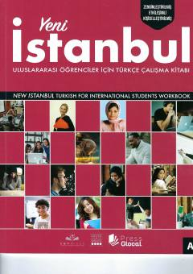

YITurk tilini boshlang'ich A1 darajada o'rganish uchun amaliy mashqlar kitobi.
Ushbu qo'llanma chet elliklar uchun turk tilini boshlang'ich A1 darajada o'rganishga mo'ljallangan amaliy mashqlar kitobidir. Kitobda kundalik muloqot, salomlashish, o'zini tanishtirish va boshqa asosiy mavzular bo'yicha turli mashqlar keltirilgan.